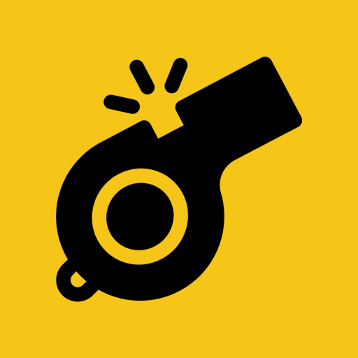

Alerta de carteristas en tiempo real
La app colaborativa que te avisa al instante cuando alguien reporta un carterista cerca de ti.
Usar Whistle ahora Gratis · Anonimo · Sin cuentaWhistle es una red de alerta ciudadana que convierte a los usuarios en los ojos de la ciudad. Cuando alguien detecta un carterista, toda la gente cerca lo sabe en menos de un segundo.
Recibe una notificacion si hay un aviso a menos de 100 metros de ti.
Visualiza las zonas con mas incidentes para saber por donde caminar.
Sin registro, sin datos personales. Solo tu y la comunidad.
Cada alerta se valida con los reportes de otros usuarios cercanos.
Tres pasos. Cero complicaciones.
Agregala a tu pantalla de inicio en segundos. Funciona como una app nativa.
Whistle detecta si hay alertas cerca de ti y te avisa al instante.
Si detectas un carterista, lanza un "whistle" con un solo toque y ayuda a otros.
Cada alerta protege a decenas de personas a tu alrededor.
Unete a la red ciudadana que hace mas seguras las calles.
Abrir Whistle No necesitas descargar nada de la App Store